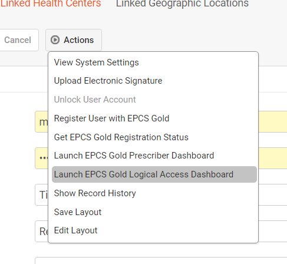
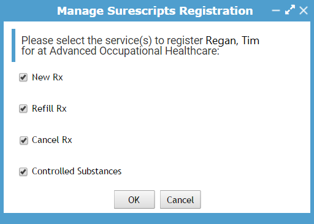

Meet with each enrolled EPCS user (i.e., any user with an EPCS status of ‘Enrolled’, ‘Active’, or ‘Inactive’) either in person or via WebEx to complete the remaining steps. Note: Dr. First refers to the eRx Admin as the ‘Authorizing Prescriber’.
Select an EPCS enrolled user and select Actions > Launch EPCS Gold Logical Access Dashboard. This will initiate the Dr. First validation process.

Instruct the user to enter their user name and password.
Enter your Authorizing Prescriber information.
Once complete, the EPCS user will show a status of ‘Active’ in the Logical Access Dashboard.
Note: Validation occurs when your Authorizing Prescriber information is entered; there is no login process when accessing the Logical Access Dashboard.
Select an EPCS user record and click the Linked Health Center tab at the top of the screen.
Select the checkbox next to a linked health center and select Actions > Manage Registration with Surescripts. The Manage Surescripts Registration form will appear.
Select Controlled Substances and click OK.

Repeat steps 5-6 for each health center listed in the user’s Linked Health Center tab.